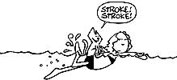
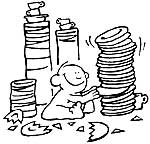
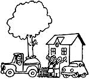
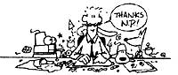

In the interest of promoting one of humankind's better ideas-barter-we announced in issue 37 our still-standing offer: Send us a short account of an actual barter (write to Success ful Swaps, THE MOTHER EARTH NEWS (restricted) , 105 Stoney Mountain Rd., Hendersonville, NC 28791), and if we print it in this column, you'll receive a year's subscription (new or extended) to MOTHER.
Likewise, if you now operate, or have ever operated, a home business that was inspired by an article you read in MOTHER, tell us about it in approximately 500 words (write to Bootstrap Businesses, THE Mother Earth News (restricted) , 105 Stoney Mountain Rd., Hendersonville, NC 28791). Be sure to mention how you started your enterprise-including how much seed money you needed-the amount you make (net), and anything else that might be of assistance to other entrepreneurs. If your story is used in this column, you'll receive a free two-year subscription to MOTHER.
When vacation time rolled around last summer, we had to decide what to do with our dog and two cats while we were away. As you surely know, it's very expensive to board critters at a kennel, and it upsets our house pets to be caged in unfamiliar surroundings.
A friend who likes animals offered to care for them at our home while we were gone, but we felt awkward about paying him for the favor. After giving the matter a good bit of thought, a barter idea popped into my head. I remembered his telling us that his two young daughters were eager to learn how to swim but were too timid to sign up for group lessons at the municipal pool. Since I have access to a swimming pool and used to teach Red Cross swimming lessons, I proposed that we trade pet care for swimming lessons.
Our pets were pampered in our absence, the girls made good progress in learning the basic swimming skills, and we plan to repeat the swap again next summer.
Mrs. L.W.
Kansas
After reading your "Swaps" column for some time, I was inspired to think of innovative ways to barter. And I've been so successful at doing so that I'm now conducting a seminar entitled "Bartering, Trading, Swapping" for a local community service foundation. In exchange for my putting on this workshop, the group is sponsoring another one of my classes on "Simple Living and Money". I've also been invited to be on a local talk show to discuss the principles of barter.
So, thanks, MOTHER, not only for encouraging me to try barter, but for helping me start on a new career of teaching people to help themselves !
C.B.R.
California
As a naturopathic physician specializing in home deliveries, I often have patients whose unplanned, but much wanted, pregnancies have put a strain on their finances. Therefore, I'm always open to bartering my services and have traded for all sorts of things over the years . . . including a rug from Bolivia, an opal necklace, and a pumpkin cheesecake!
Last year, when I was furnishing my new home, I realized that I didn't own much in the way of furniture, dishes, etc. So, when a young couple came to my office inquiring about a home delivery that they were afraid they couldn't afford, I was delighted to discover that the husband was a potter.
We agreed to exchange the delivery charge for a lovely set of plates, bowls, and mugs. The teacher of the birth preparation class got into the act by trading the registration fee for a pitcher and a set of mugs to, use in the birthing room. And, since many of the class participants have since noticed that pottery and wanted pieces of their own, the trade improved the potter's business, the birthing room, and my home.
M.S.
Oregon
A few years ago I read an article in MOTHER (issue 48, page 33) by Jane and Steve Fry entitled "We Call 'Em 'Dough Babies'". The project outlined in that feature sounded like fun, so I mixed up a batch of the ingredients and created a few ornaments for the family Christmas tree. By the spring of 1983, after a lot of practice, I felt my dough art had become good enough to market.
However, the Christmas season had passed, and tree ornaments were not in demand that spring, so I decided to design a few refrigerator magnets and offer them for sale. Because I already had a good supply of the flour, salt, paints, and varnish required, my only initial investment was $25 for some magnetic stripping. I started out by making two dozen each of six different shapes. Those first figures were mushrooms, owls, ladybugs, frogs, clowns, and turtles.
About the time I finished that first batch of refrigerator magnets, I had a garage sale. I displayed the figures and priced them at $1.50 each. I didn't really have much hope of anyone buying the decorations at that type of sale, but I thought if I sold even one it would give me the confidence to try marketing them through craft shops and the like. Well, by the end of the three-day event, I'd sold not just one magnet, but all of them, for a gross of $216. And though I had none left to take around to gift shops, I was pretty certain that, when I made a new batch, my creations would be very marketable.
So, I got busy and baked twice as many dough figures as I had before. I took them to craft stores, small grocery outlets, and drug stores. I charged a fixed price of 75 cents for each one and worked on a cash-only basis right from the start. It was only one week before my new collection of dough magnets was sold.
That second success encouraged me to improve my system by designing a schedule for myself. For the rest of 1983, I made magnets for two weeks at a time and then sold them during the following two weeks. That arrangement seems to be the right one for me; my net profit for the first seven months came to about $6,200! Had I not read the article in your magazine, I'd still be worrying about how to make an income and, at the same time, have fun doing it. Thank you, MOTHER, for giving me the inspiration I needed to get going.
J.M.
Oregon
Our city yard is approximately 30' X 50', including the driveway and sidewalks. The previous owners had planted two sweet gum trees in this space . . . and though they were beautiful, healthy, and well shaped, they were already 25 feet tall with the prospect of reaching 130 to 180 feet at maturity! We had to cut one down a while back, when we redid the driveway, but we still had its mate, which was rapidly becoming too large for the yard.
When I called a local tree nursery and told them I had a sweet gum tree that needed to be removed from my yard, they immediately told me it would cost $200 to cut it down. I then asked if they had the equipment to take the tree alive. When the owner replied that he did, I told him my plan: Remove the tree, fill in the hole, resod it, and plant a 10- to 15-foot scrub oak, all at no cost to me, in exchange for the sweet gum, which had a retail value of $2,400.
The nurseryman thought this over for a few days and then agreed to my proposed swap. After winter put the tree in its dormant stage, his crew showed up with shovels and a crane on a flatbed truck. Three days-and a larger crane-later, they hauled the tree away, photographing the whole procedure, since they had never removed such a large tree before.
The sweet gum is now on display in front of their business, and my little oak produced its first acorns this year.
S.G.
Oklahoma
My dad subscribes to your magazine, and I really enjoy it . . . especially The Weird Humor of Jack Vaughan, Down on the Farm, and Successful Swaps.
I have one exceptionally neat swapping story to tell you. I started bartering marbles when I was 11 years old and living in Rwanda. One day at school, a friend of mine wanted to play marbles, but he didn't have any. I offered to trade seven of my marbles for his pen. However, when we returned to class, he needed his pen and wanted to exchange again. I really didn't want to, but when he offered me a French dictionary for the pen, I couldn't refuse!
I love your magazine!
N.P.
Tunis, Africa
|
 |
 |
 |
|
 |
|
|